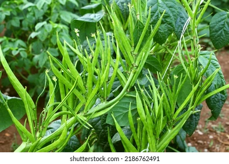

Explore Organic Farming in Rajasthan
About Organic Farming in Rajasthan
Rajasthan, located in the arid region of India, is one of the country's leaders in organic farming. Known for its organic cultivation of **guar**, **barley**, and **pulses**, the state has made significant strides in promoting sustainable agriculture despite challenging climatic conditions.
Key Organic Products
Rajasthan is one of the largest producers of **guar** (used primarily for industrial purposes) and **barley**. Additionally, the state is known for organic pulses like **chickpeas** and **moong dal**, which are integral to Indian cuisine.
Sustainable Farming Practices
Rajasthan's farmers have adopted organic farming techniques to combat the adverse effects of chemical fertilizers and pesticides. These techniques include:
- Water conservation strategies like drip irrigation
- Use of bio-fertilizers and natural pesticides
- Crop rotation and agroforestry to preserve soil fertility
Focus on Water Conservation
In Rajasthan, where water scarcity is a significant issue, farmers are focusing on **rainwater harvesting** and using **efficient irrigation techniques** to ensure that their crops remain viable throughout the year. This focus on water conservation is a critical part of the state's push towards sustainable agriculture.
Rajasthan’s organic farming practices are helping to preserve the environment while providing high-quality crops to the market.
← Back to India Map